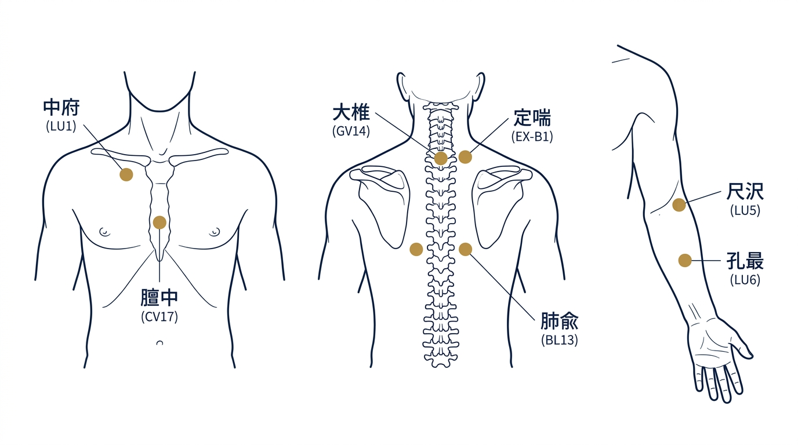

銀座そうぜん鍼灸院の臨床解説では、難治性咳喘息の来院者に特徴的な2つの要因を挙げています。第1に、自律神経の乱れにより気管支神経が過敏になり、冷気や会話などのわずかな刺激で咳反射が止まらなくなる状態（第1〜3胸椎付近の背部に細かいニキビが出やすいのが臨床サイン）。第2に、長期の吸入ステロイド使用で胃酸逆流（逆流性食道炎）を併発し、食道・気道壁が刺激され続ける悪循環です。
吸入を急に止める不安がある場合は、主治医の吸入治療を継続したまま、自律神経・気管支神経・胃腸機能を並行して整えるアプローチを行います。

| ツボ名（経穴） | 位置の目安 | 主な狙い・役割 | セルフケアの注意点 |
|---|---|---|---|
| 尺沢（しゃくたく） | 肘内側の横ジワ上、上腕二頭筋腱のすぐ親指側 | 肺経の合水穴。鎮咳・気道過敏の緩和に最重視 | 強めの指圧・お灸・置き鍼が有効（内出血・かぶれに注意） |
| 中府（ちゅうふ） | 鎖骨外端下のくぼみから親指1本分下 | 肺の募穴。胸郭の緊張を緩め呼吸を深くする | 3指を揃え息を吐きながら優しく圧迫 |
| 孔最（こうさい） | 肘シワ外端（尺沢）と手首を結ぶ線上、肘から指5本分手首側 | 肺経の郄穴。頑固な咳や喉の炎症・発汗調整 | 圧痛が強いため初回は弱めから慎重に。お灸も好適 |
| 大椎（だいつい） | 首を前に倒して最も出っ張る骨（第7頸椎）のすぐ下 | 気管支神経の鎮静、自律神経調整（吸入中のケアに推奨） | 温熱パッチや蒸しタオルでも代用可（低温やけど注意） |
| 肺兪（はいゆ） | 第3胸椎棘突起下から左右へ指2本分外側 | 慢性咳嗽RCTで最多使用（25/30試験）。背部T1〜T3緊張緩和 | 強いゴリ押しは避け、軽い圧迫や温熱にとどめる |
| 膻中（だんちゅう） | 左右の乳頭を結ぶ線の中央、胸骨上 | 胸の圧迫感・息苦しさ・自律神経性の咳反射緩和 | 骨直上のため強圧は避け、指腹で優しくさする／温める |
| 定喘（ていぜん） | 大椎の左右外側へ指約半本分（0.5寸） | 喘息・咳嗽発作の鎮静（慢性咳嗽RCT頻用穴） | 強い指圧でめまいが出ないよう温熱ケアが安全 |
| 年・研究デザイン | 対象・規模 | 主な結果と臨床的意義 | 限界・出典 |
|---|---|---|---|
| 2021年 メタ解析 | 咳喘息（CVA）11 RCTs（計929名） | 総有効率RR=1.18（p<0.00001）、薬物中止後の再発率RR=0.19（p=0.002）。咳嗽・肺機能・炎症指標も改善。 | 組入れRCTの質が低く出版バイアス懸念。eCAM (PMID: 33868443) |
| 2025年 メタ解析 | 慢性咳嗽全般 30 RCTs（計2,835名） | 通常治療への鍼灸上乗せで咳嗽重症度・QOL（LCQ）・総有効率が有意改善、有害事象の群間差なし。 | GRADE中等度・客観的咳回数評価なし。Integr Med Res (PMID: 39944112) |
| 2026年 メタ解析 | GERD関連慢性咳嗽 5 RCTs（計390名） | 西洋薬単独比で日中・夜間咳嗽スコアおよびLCQ（MD 2.29, p<0.00001）が有意改善、重篤な有害事象なし。 | 試験数少・盲検化限界。当院のGERD視点と一致。Front Med (PMID: 41859159) |
| 2017年 RCT | 小児咳喘息 206名（3か月治療＋9か月追跡） | モンテルカスト単独比で総有効率93.1% vs 87.6%（p<0.05）、追跡時再発回数も有意減少（p<0.05）。 | 小児対象・埋線療法（通常鍼と異なる）。Zhongguo Zhen Jiu (PMID: 29231431) |
| 2015年 クロスオーバー試験 | 軽〜中等症喘息成人 74名 | 実鍼後に喀痰好酸球（p=0.035）・PEF（p=0.01）・咳嗽（p=0.040）・夜間覚醒（p=0.009）が改善。 | シャム群でも症状改善し群間差限定的。Clinics (PMID: 26598077) |
| 2000年 国内症例報告 | 薬物無効の慢性咳嗽（n=1） | 週1回の置鍼・灸頭鍼・皮内鍼で激しい咳嗽と喀出し難い痰が消失し体力回復を確認。 | 単一症例報告（対照群なし）。J-STAGE |
⚠ 専門医の精密検査を最優先すべきサイン
血痰・喀血、安静時や夜間の強い呼吸困難・チアノーゼ、45歳以上の喫煙者における新規の咳や声枯れ（嗄声）の持続、発熱・原因不明の体重減少・下肢浮腫、飲食時のむせ・繰り返す肺炎、胸部レントゲン異常がある場合は、鍼灸より先に呼吸器内科で精密検査を受けてください。